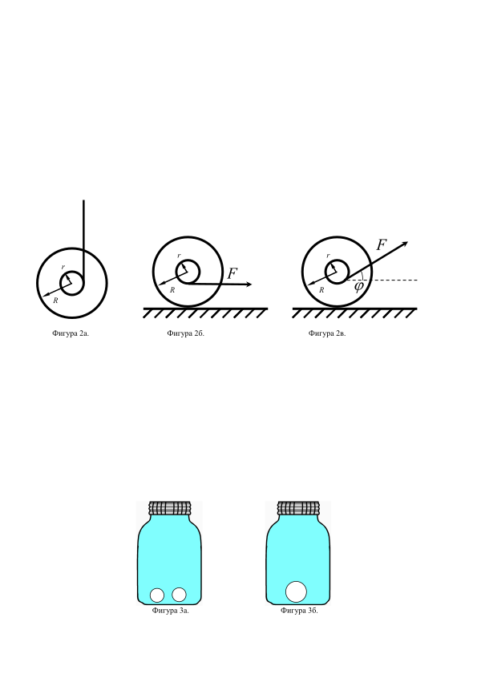

Задача 1. Индуциран заряд върху сфери
Част 1. Две еднакви метални и незаредени сфери с радиус R са свързани посредством прав, много тънък и дълъг проводник с дължина L ( L R ). Системата от двете сфери с проводника се поставя в хомогенно електрично поле с големина E така, че посоката на полето да е успоредна на правия проводник, както е показано на Фигура 1а. Намерете: а) Заряда, който се индуцира върху лявата сфера. [1,5т] б) Заряда, който се индуцира върху дясната сфера. [1,5т] в) Ако външното поле стане мигновено нула, то намерете времето, за което зарядът на сферите ще намалее e - пъти ( e = 2,7182818 е Неперовото число). Съпротивлението на проводника е r . [2т]
 Фигура 1а. Фигура 1б.
Фигура 1а. Фигура 1б.
Част 2. Нека сега, вместо две, да имаме три последователно свързани сфери, центровете на които лежат на една права, която е успоредна на външното електрично поле E , както е показано на Фигура 1б. Намерете: г) Заряда, който се индуцира върху лявата сфера. [1т] д) Заряда, който се индуцира върху дясната сфера. [1т] е) Заряда, който се индуцира върху средната сфера. [1т]
Част 3. Нека сега имаме N последователно свързани сфери, центровете на които лежат на една права, която е успоредна на външното електрично поле E . Намерете: ж) Заряда, който се индуцира върху крайните две сфери. [2т]
Упътване: при решаването на задачата пренебрегнете заряда, който се натрупва върху проводниците, свързващи сферите и считайте, че всяка една от сферите се зарежда хомогенно.
Задача 2. Йо-йо

Йо-йо е играчка, направена от два еднакви малки диска от пластмаса (метал, дървесина или други материали), свързани с ос, около която е навита еластична нишка (конец), завършваща с примка за пръста. Така получената макаричка се пуска надолу и сама се връща в ръката на играещия.
Част 1. На Фигура 2а. е показано Йо-йо с външен радиус R и вътрешен (на който се навива конеца) r . Ако инерчният момент на Йо-йото спрямо оста му на симетрия е I , а масата на Йо-йото е M , то намерете: а) Линейното ускорение a , с което Йо-йото ще се движи, ако го пуснем свободно, но държим края на конеца така, че конецът да се развива. [3т] б) Ако конецът е с дължина L и е изцяло намотан на Йо-йото, то каква ще е крайната линейна скорост V на центъра на масата на Йо-йото точно в момента, в който конецът изцяло се е развил от Йо-йото. [2т] в) Каква ще е ъгловата скорост $\Omega$ на Йо-йото за предишната подточка (подточка б). [1т]
Част 2. Същото Йо-йо от предишната част на задачата е поставено на маса и конецът започва да се придърпва с хоризонтална сила F надясно, както е показано на Фигура 2б, вследствие на която Йо-йото започва да се търкаля без хлъзгане. Намерете: г) В каква посока ще се движи Йо-йото (наляво или надясно на чертежа) и посоката, в която ще се върти то (по часовниковата стрелка или обратно на часовниковата стрелка). Обосновете отговора си. [1т] д) Ако силата F не е хоризонтална, а сключва ъгъл $\varphi$ с хоризонта (Фигура 2в), то при какъв критичен ъгъл $\varphi$ Йо-йото ще обърне посоката си на движение и на въртене? Обосновете отговора си. [3т]
r r F r F R R $\varphi$ R
Фигура 2а. Фигура 2б. Фигура 2в.
Задача 3. Повърхностно напрежение
Част 1. Херметически затворен буркан е напълнен изцяло с вода. Освен водата, на дъното на буркана се намират и два малки въздушни мехура, както е показано на Фигура 3а. Двата мехура бавно се сливат и образуват един по-голям мехур, както е показано на Фигура 3б. Налягането на гърлото на буркана е P0 , първоначалният радиус на двата мехура е R0 , а коефициентът на повърхностно напрежение на водата е $\sigma$ . Считайки, че процесът на сливането на мехурите е изотермен, намерете: а) Радиуса R на новообразувалият се мехур. [1т] б) Изменението на налягането при гърлото на буркана $\Delta$P . [3т] Упътване: Считайте, че размерите на мехурите са пренебрежимо малки в сравнение с размерите на буркана. Също така приемете, че водата е несвиваема, а въздухът в мехурите е идеален газ.
Фигура 3а. Фигура 3б. Част 2. Два сапунени мехура, които се намират във въздух, имат радиуси R1 и R2 . Двата мехура се сливат бавно в един мехур с радиус R0 . Считайки, че процесът на сливането на мехурите е изотермен, намерете коефициента на повърхностно напрежение $\sigma$ за сапунения разтвор, ако атмосферното налягане е Pat . . [3т] Упътване: Приемете, че въздухът в мехурите и извън него е идеален газ.
Част 3. Две еднакви капки живак с радиус R0 се намират при една и съща температура T0 . Ако повърхностното напрежение на живака е $\sigma$ , топлинният му капацитет е c , а плътността му е $\rho$ , то намерете температурата на капката живак, която се е образувала от сливането на двете капки. Пренебрегнете разширението на живака и топлообмена с околната среда. [3т]